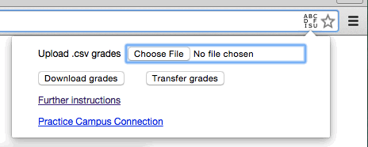
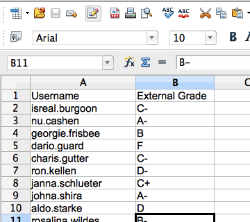
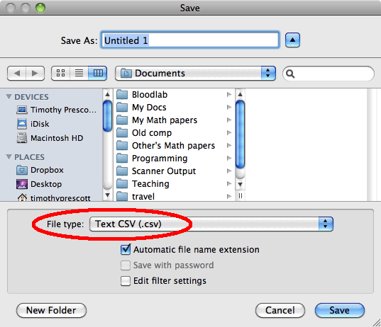

Automated Grade Entry in NDUS's Campus Connection
(Beta)
These are instructions for using the Google Chrome extension
Campus Connection Grader to automatically enter grades
into the NDUS system.
There are three things you can do:
-
Download a
.csv file from Blackboard with your
students' information and "External Grade"
(in detail).
-
Upload a
.csv file to Campus Connection with your
students' EmplId (or username) and "External Grade"
(in detail).
-
Do both at once: transfer your students'
"External Grade" from Blackboard to Campus Connection
(in detail).
To start each of these, load the appropriate webpage(s) and click
the
that appears at the right of the address bar.

Installation
Google Chrome
Other browsers
With sufficient demand, it should be possible to create a version
for Firefox, Opera or Safari.
With sufficient demand and support, it
might be possible to create a version for Internet Explorer.
Step by Step Instructions
-
Download a
.csv file from Blackboard with your
students' information and "External Grade":
-
Make sure that your Grade Center has the following columns:
-
One designated as the External
Grade (or named "External Grade")
-
"Student ID (EMPLID)" or "Username"
or both.
-
"Last Name" and "First Name"
will also be included if they are present.
(Help.)
-
Click the
that appears at the right of the address bar and click
"Download".
-
The webpage will briefly switch into Screen Reader Mode to create
the download.
- Save this file to
My Computer.
-
Upload a
.csv file to Campus Connection with your
students' EmplId (or username) and "External Grade".
-
Click the
that appears at the right of the address bar and click
"Upload .csv grades".
- Choose the file Blackboard saved to your computer.
-
If you aren't using Blackboard, you can create a spreadsheet
with the columns "Student ID" (their EMPL ID)
or "Username" (their NDUS user ID)
and "External Grade"

and save this as a .csv file.

(Help.)
-
Change to "Ready To Review" or
"Approved" and Save.
-
Do both at once: transfer your students'
"External Grade" from Blackboard to Campus Connection.
-
In separate tabs, open Campus Connection and
Blackboard's Grade Center with the appropriate columns.
-
Click the
that appears at the right of the address bar and click
"Transfer grades".
-
Change to "Ready To Review" or
"Approved" and Save.
Miscellaneous notes
-
Final grades of "U" and "F" are not
entered. You will need to distinguish between
- "F" (they completed the course),
-
"FN" (they stopped attending —
enter the last date of attendance), and
- "FNN" (they never attended).
- The uploaded grade must be a letter grade.
-
You can include a plus or minus after the grade; it will be ignored.
-
You can include other columns in your
.csv file;
they will be ignored.
-
If you use "Username" instead of "Student ID",
grades for students from other NDUS campuses may not load.
- The student names shown above are fictitious.
-
We would appreciate you completing a
qualtrics
survey about this process.
Testing
You can test the extension only when the grading webapges are
available.
For Blackboard, this is whenever you want, but for Campus
Connection, this is only a few weeks at a time.
To test that the .csv file will work if Campus
Connection is not available:
Google Chrome
-
Go to the url
chrome://extensions/
or click the Chrome Menu
,
then Tools,
then Extensions.
- Find this extension in the list.
- Click "Options".
Help
-
CILT (or other tech support) will not be able to help you use
this extension. They will be able to help you do the following:
- Install a browser extension.
- 1. Create a Blackboard Smart View with the columns
- "Last Name"
- "First Name"
- "Username"
- "Student ID (EMPLID)"
- Designated (or named) "External Grade"
- 3. Save an Excel file as a
.csv
Disclaimers
-
Use this at your own risk. If your grades are not entered
properly, it is your fault and your responsibility.
-
This extension is not affiliated with or endorsed by NDUS or UND.
If you have any difficulty, I may be able to help you out at
timothy.prescott.UND@gmail.com.
I may also be on vacation, so again, use this at your own risk.